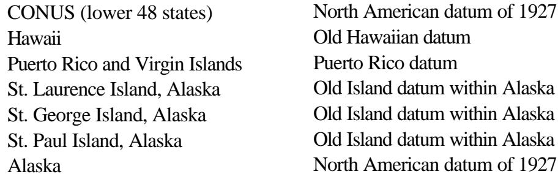
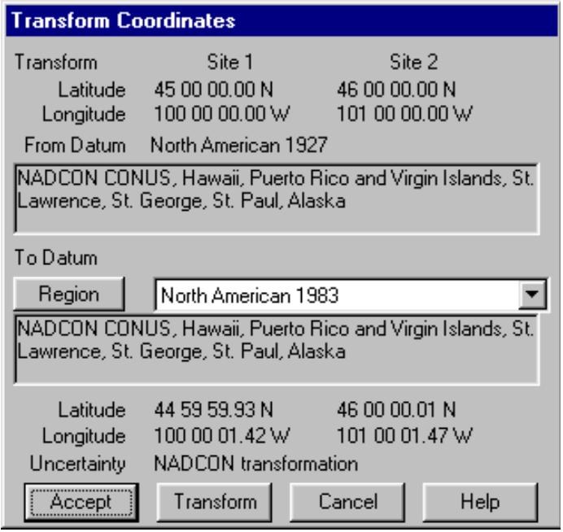
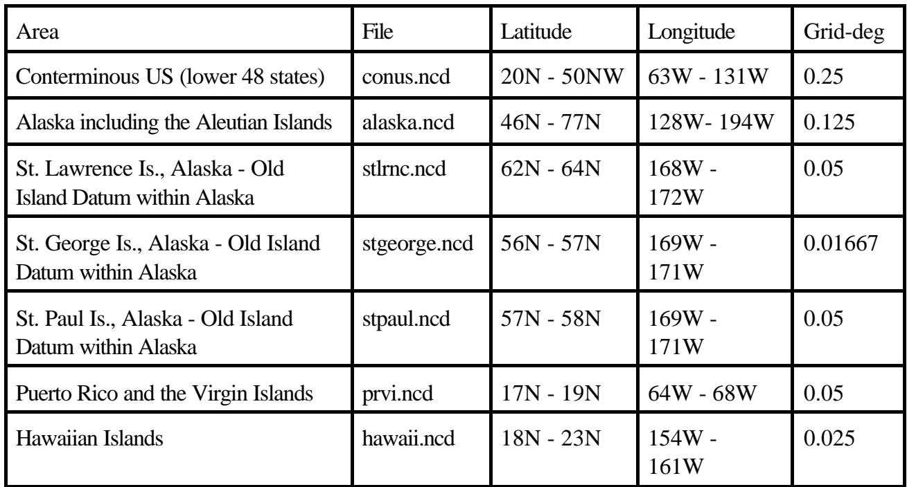

#2 textPhiên bản tháng 3 năm 2001 của chương trình Pathloss hiện sử dụng dữ liệu NADCON để chuyển đổi vĩ độ và kinh độ giữa Hệ thống Dữ liệu Bắc Mỹ năm 1927 (NAD27) và Hệ thống Dữ liệu Bắc Mỹ năm 1983 (NAD83). Việc chuyển đổi chỉ có hiệu lực trong phạm vi lãnh thổ Hoa Kỳ. NADCON là tiêu chuẩn liên bang Hoa Kỳ cho các chuyển đổi hệ dữ liệu từ NAD27 sang NAD83.
#3 textCác thao tác sau đây bị ảnh hưởng:
#4 text• Chuyển đổi tọa độ giữa các hệ dữ liệu NAD27 và NAD83 trong quy trình Tọa độ - Chuyển đổi trong mô-đun Dữ liệu Địa hình.
#5 text• Tất cả các thao tác cơ sở dữ liệu địa hình sử dụng DEMS 7,5 phút - 30 mét của USGS bao gồm:
#6 list
- tạo mặt cắt đơn
- tạo mặt cắt xuyên tâm trong Mô-đun Phủ sóng
- nền mạng
- xem địa hình
#7 textNếu hệ dữ liệu NAD83 đã được chỉ định, thì một bản sao tọa độ của người dùng sẽ tự động được chuyển đổi sang hệ dữ liệu NAD27 để đọc cơ sở dữ liệu.
#8 titleQuy trình Chuyển đổi
#9 textĐể chuyển đổi tọa độ giữa các hệ dữ liệu NAD27 và NAD83, phải thực hiện các cài đặt sau trong hộp thoại Mặc định Địa lý:
#10 image
#11 text“Sử dụng Hệ dữ liệu” phải được chọn trong hộp thoại Sử dụng Hệ dữ liệu hoặc Ellipsoid.
#12 textHệ dữ liệu
#13 image
#14 textEllipsoid
#15 textPhải chọn hệ dữ liệu NAD27 hoặc NAD83. Hệ
#16 textdữ liệu
#17 textBắc Mỹ 1927
#18 image
#19 image
#20 textChọn vùng NADCON.
#21 textTrong trường hợp hệ dữ liệu NAD27, vùng NADCON là một thuật ngữ bao quát và bao gồm các hệ dữ liệu và vùng cụ thể sau đây.
#22 table

#23 textDữ liệu chuyển đổi được chứa trong bảy tệp. Chương trình sẽ tự động chọn tệp chính xác dựa trên tọa độ.
#24 titleChuyển đổi Tọa độ
#25 image

#26 textChuyển đổi Tọa độ được thực hiện trong mô-đun Dữ liệu Địa hình. Chọn Tọa độ - Chuyển đổi. Để truy cập quy trình này, phải chọn một hệ dữ liệu và nhập tọa độ cho ít nhất một địa điểm.
#27 textĐặt “Đến Hệ dữ liệu” thành NAD27 hoặc NAD83 và sau đó chọn vùng NADCON.
#28 textNhấp vào nút Chuyển đổi để thực hiện chuyển đổi tọa độ.
#29 textNút Chấp nhận thay đổi tọa độ địa điểm thành tọa độ đã chuyển đổi.
#30 titleNADCON và Cơ sở dữ liệu Địa hình 7,5 phút (30 mét) của USGS.
#31 textKhi cơ sở dữ liệu địa hình 7,5 phút (30 mét) của USGS đã được chọn và tọa độ đầu vào ở hệ dữ liệu NAD83, tọa độ sẽ được chuyển đổi sang NAD27 cho thao tác cơ sở dữ liệu cụ thể. Việc chuyển đổi này sẽ luôn được thực hiện cho bất kỳ lựa chọn vùng nào có sẵn dưới hệ dữ liệu NAD83.
#32 textThao tác Cơ sở dữ liệu Địa hình Chính và Phụ
#33 textVới tình huống dưới đây:
#34 list
o Tọa độ người dùng ở NAD83
o Cơ sở dữ liệu địa hình chính được đặt thành USGS 7,5 phút (30 mét)
o Cơ sở dữ liệu địa hình phụ được đặt thành USGS 3 giây nén, GTOPO30 hoặc bất kỳ lựa chọn DTED nào. Tất cả đều được tham chiếu đến hệ dữ liệu WGS84.
o Do phạm vi phủ sóng không đầy đủ của cơ sở dữ liệu USGS 7,5 phút, cơ sở dữ liệu phụ sẽ được sử dụng cho một phần của mặt cắt.
#35 textNên chọn vùng nào cho hệ dữ liệu NAD83?
#36 textKhông nên chọn vùng NADCON. Thay vào đó, hãy sử dụng vùng cụ thể (ví dụ: CONUS, Hawaii, Alaska không bao gồm Quần đảo Aleutian hoặc Quần đảo Aleutian). Khi chương trình đọc cơ sở dữ liệu USGS 7,5 phút, tọa độ sẽ tự động được chuyển đổi sang NAD27 bằng NADCON. Khi chương trình đọc cơ sở dữ liệu phụ, việc chuyển đổi sang WGS 84 sẽ được thực hiện cho
#37 textvùng đã chỉ định.
#38 titleNâng cấp NADCON
#39 textCác bộ dữ liệu NADCON được sử dụng trong chương trình Pathloss bao gồm bảy tệp được hiển thị trong bảng dưới đây. Dữ liệu NADCON gốc sử dụng các tệp riêng biệt cho vĩ độ và kinh độ cho mỗi vùng. Trong chương trình Pathloss, chúng đã được kết hợp thành một tệp duy nhất. Các tệp này phải được đặt trong một thư mục con có tên NADCON trong thư mục chương trình Pathloss.
#40 textCác tệp dữ liệu NADCON để sử dụng với chương trình Pathloss có sẵn từ trang web CTE (www.pathloss.com) và được đóng gói trong một tệp WinZip tự giải nén có tên PLnadcon.exe. Tải xuống tệp này và thực thi nó. Thư mục đích phải được đặt thành thư mục chương trình Pathloss. Thư mục con cần thiết sẽ được tự động tạo.
#41 titleMô tả NADCON
#42 textNgoài Lãnh thổ Liên bang Hoa Kỳ, dữ liệu NADCON cũng được sử dụng để chuyển đổi dữ liệu ban đầu được biểu thị bằng các hệ dữ liệu đảo cũ tồn tại ở Alaska, Hawaii, Puerto Rico và Quần đảo Virgin thành dữ liệu được tham chiếu đến NAD 83. Tuy nhiên, tất cả các hệ dữ liệu, bao gồm cả các hệ này, đều được gọi là NAD 27. Quy trình tự động chọn phép chuyển đổi phù hợp; người dùng không cần biết tên cụ thể của các hệ dữ liệu gốc.
#43 titleĐộ chính xác Chuyển đổi
#44 textỞ mức độ tin cậy 67 phần trăm, việc chuyển đổi đưa ra các độ không chắc chắn sau:
#45 list
khoảng 0,15 mét độ không chắc chắn trong lãnh thổ liên bang Hoa Kỳ
0,50 mét độ không chắc chắn trong Alaska
I 0,20 mét độ không chắc chắn trong Hawaii
n 0,05 mét độ không chắc chắn trong Puerto Rico và Quần đảo Virgin.
#46 textỞ những khu vực có phạm vi phủ sóng dữ liệu trắc địa thưa thớt, NADCON có thể cho kết quả kém chính xác hơn, nhưng hiếm khi vượt quá 1,0 mét.
#47 textỞ các vùng gần bờ biển, kết quả sẽ kém chính xác hơn nhưng hiếm khi vượt quá 5,0 mét. Xa hơn ngoài khơi, NAD 27 không được xác định.
#48 table

#49 textĐảo St. George và Đảo St. Paul là một phần của khu vực được gọi là Quần đảo Pribilof. Có hai hệ dữ liệu riêng biệt, một cho mỗi đảo, trước NAD 83. Các hệ dữ liệu đảo cũ khác biệt đáng kể so với NAD 27. Dữ liệu đầu vào vào NADCON phải nhất quán với các bộ dữ liệu chuyển đổi đã xác định. Việc chuyển đổi dữ liệu bị xác định sai có thể dẫn đến sai số rất lớn (lên tới hàng trăm mét).
#50 textTệp CONUS bao phủ một khu vực từ 20 đến 50 độ vĩ bắc và từ 63 đến 131 độ kinh tây. Tệp Alaska bao phủ một khu vực từ 46 đến 77 độ vĩ bắc và từ 128 đến 194 độ kinh tây. Các tệp CONUS và Alaska chồng lấn giữa 46 đến 50 độ vĩ bắc và 128 đến 131 độ kinh tây. Trong khu vực này, các tệp CONUS và Alaska thống nhất trong phạm vi 2 cm. Đối với những trường hợp yêu cầu độ chính xác cao hơn mức này, tệp CONUS được coi là chính xác. Trong vùng chồng lấn này, tệp CONUS sẽ luôn được sử dụng trong chương trình Pathloss. Các chuyển đổi dựa trên dữ liệu NADCON chỉ nên được sử dụng trong phạm vi lãnh thổ Hoa Kỳ.